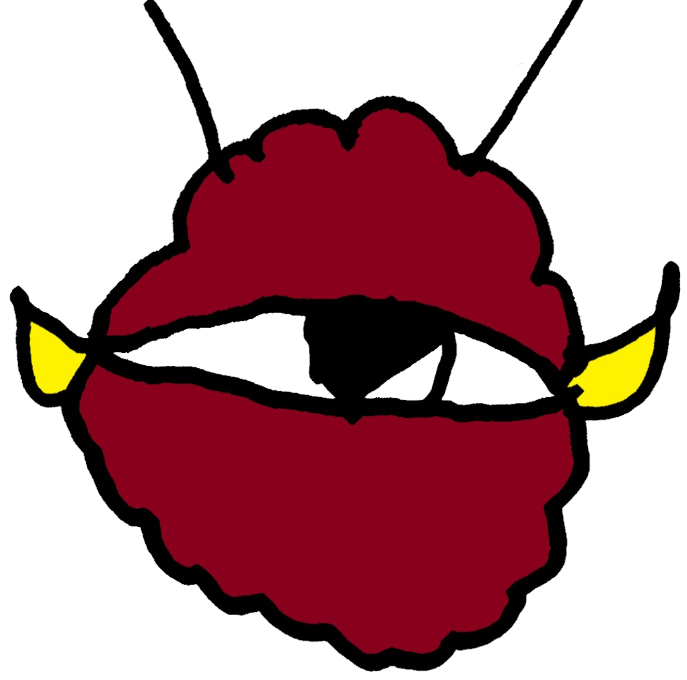

FutureMon Fight!

Welcome to FutureMon Fight! Official Website!
What is FutureMon Fight?
FutureMon fight is a action packed game where humans and monsters from different worlds become partners and fight other player using items,more monsters, and spells and even huge weapons to finish their enemies off!!!
Backstory!
The backstory is.....
One day on planet earth a boy found a card,it looked like a monster when he held up the card it glowed then a new game began called FutureMon Fight!...Humans and monsters from different worlds become partners and fight other player using items,more monsters, and spells and even huge weapons to finish their enemies off!!! But one person was intending to take over the world by using the monsters life source to power his equipment but a team called Blaze cannon 🔥⚡⚡🔥(Bureizukyanon or ブレイズキャノン in japanese) formed and are hoping that they can stop this from happening.The team members are Flame Mikado, Kateri Miyashiro, Yami Takayama and many more will be joining and the person who is intending is Kesetsu Omnigata.
Insperation!
So Guys I(The Creator) got the insperation from an anime named Buddyfight! and a yt channel called ChaosGalaxyTCG and videos related to TCG (Trading card games).
About the creator!
So FutureMon Fight was created by a 12 year old indian boy named Nalin Mathur(Me). I started making tcgs when i was 9 or 10,i made my 1st tcg and its name was "Dragon world era" but that was a failure. Then i made another tcg which was names "Oh no!" which was like a cheaper version of UNO card game. But when i started make another tcg 1st i make the card packs and i never made cards for it because it would be a waste of paper but when i made the logo i named it "Monster Fight" then after 1 or 2 months i started another tcg which was the beginning of FutureMon fight i took some ideas from my old tcgs i made like dragon world era, oh no! and Monster fight and i made ton of cards. So, i decided to make this card successful. Now about me so i was watching Buddyfight which was my 1st insperation i luved that anime and decided to make these tcgs then i watched a youtube channel named ChaosGalaxyTCG and started to make myself some tcgs. Thats about me.CHECK OUT, THE OTHER THINGS BELOW!!
